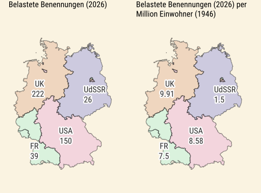
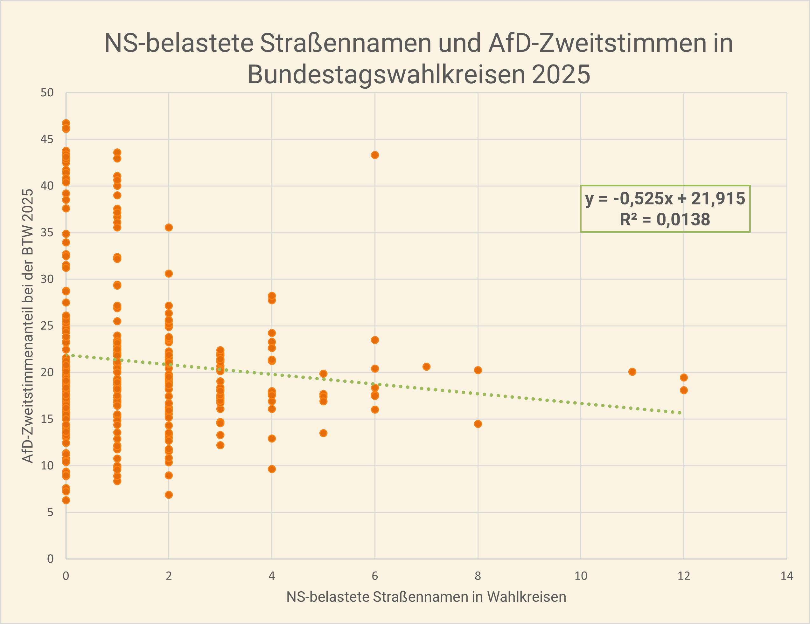

Einführung

Spätestens seit den 2010er Jahren findet in Deutschland eine verstärkte Debatte über alte Straßennamen und Ehrungen historischer Personen im öffentlichen Raum statt. Anschub bekommt die Debatte nicht nur von historisch Interessierten, sondern auch von aktuellen Entwicklungen, die demokratische Werte, Weltoffenheit und das Bekenntnis zu den Menschenrechten infrage zu stellen scheinen.
Nach der späten Enttarnung der Neonazi-Terrororganisation NSU im Jahr 2011 und dem Zuwachs rechtspopulistischer Tendenzen seit Mitte der 2010er Jahre fanden sich unter Lokalpolitikern an vielen Orten Mehrheiten dafür, Benennungen nach alten Kolonialisten und Rassisten, insbesondere aber Wegbereitern und Anhängern der Nazi-Herrschaft zu überdenken. Prominente Beispiele sind Städte wie Münster, Kiel und Hamburg, die den Namen Paul von Hindenburgs von zentralen Plätzen, Promenaden und großen Verkehrsachsen entfernten und damit jenen Weltkriegsgeneral und antidemokratischen Reichspräsidenten aus dem Stadtbild verbannten, der Hitler einst zum Amt verholfen hatte. Auch die Namen heute kaum noch bekannter, einst aber populäre Autoren, die sich dem Nazi-Regime angedient und für 'Opfermut' im Krieg geworben hatten – wie Agnes Miegel, Ina Seidel und Gustav Frenssen – werden vielerorts getilgt.
Die Debatten über Ehrungen und Umbenennungen schlagen mitunter hohe Wellen und werden auch in der nationalen Öffentlichkeit teilweise kontrovers geführt. Prinzipiell sind die Diskussionen darüber, ob belastete Straßenbenennungen und ähnliche Ehrungen im öffentlichen Raum noch tragbar sind, aber ein Thema der Kommunalpolitik. In einer Handreichung von 2021 weist der Deutsche Städtetag auf die Komplexität solcher Entschlussfassungen hin, die nicht nur historische Forschungen, sondern auch lokales Heimatempfinden und kommunale Finanzen berücksichtigen müssen. Ob Benennungen bleiben, ob sie mit kommentierenden Plaketten versehen werden oder ganz verschwinden — darüber wird auf der lokalen Ebene vielfach gestritten.
Akteure

{kind=link}
Die hier vorgestellte interaktive Webkarte eröffnet eine neue Perspektive auf das Problemfeld. Sie verortet erstmals drei besonders häufig kritisierte Gruppen von Namensgebern im gesamten Bundesgebiet und macht so übergreifende Muster sichtbar. Darüber hinaus weist sie auf historische und strukturelle Gründe hin, die zur örtlichen Verbreitung oder zum weitgehenden Fehlen bestimmter belasteter Namen geführt haben – an erster Stelle die verschiedenen Politiken der Alliierten Militärregierungen 1945-1949 und der unterschiedliche Ansatz in Ost und West 1949-1990. Es handelt sich nicht um eine vollständige Kartierung aller NS-belasteten Namensgeber im öffentlichen Raum Deutschlands – ein nahezu unmögliches Unterfangen. Stattdessen konzentriert sich die Karte auf die Darstellung dreier ausgewählter Benennungen:
- Paul von Hindenburg (1847–1934), aufgrund der großen Verbreitung seines Namens im Straßenbild. Der ehemalige Weltkriegsgeneral war ab 1925 bis zu seinem Tod Reichspräsident der Weimarer Republik. In dieser Funktion ernannte er am 30. Januar 1933 Adolf Hitler zum Reichskanzler, obwohl die NSDAP keine parlamentarische Mehrheit besaß. In den folgenden Monaten unterzeichnete Hindenburg zentrale Notverordnungen und Gesetze – darunter die Reichstagsbrandverordnung und das Ermächtigungsgesetz –, die wesentliche Grundrechte außer Kraft setzten. Damit trug er maßgeblich dazu bei, dass die nationalsozialistische Führung die Weimarer Republik aushöhlen und eine Diktatur errichten konnte.
- Achtundachtzig Schriftstellerinnen und Schriftsteller, die im Oktober 1933 – nach den ersten Bücherverbrennungen, der Zerschlagung der Demokratie und dem Beginn systematischer Judenverfolgungen – ein öffentliches „Gelöbnis treuester Gefolgschaft“ für Adolf Hitler unterzeichneten und sich damit eindeutig zum Regime bekannten.
- Industrielle, die in den Nürnberger Industriellenprozessen (Krupp, Flick und IG Farben) 1947/48 primär für die Ausbeutung, Misshandlung und den "Verschleiß" von Zwangsarbeitern sowie für die Arisierung jüdischen Eigentums verurteilt wurden.
Diese drei Kategorien bilden lediglich die Spitze des Eisbergs von NS-Belasteten im deutschen Straßenbild. Unbestritten gab es zahlreiche noch heute geehrte Industrielle, die das Regime stützten und von seinen Verbrechen profitierten; Schriftsteller, die es ideologisch unterstützten; sowie Politiker, die willentlich am Aufbau der Diktatur mitwirkten. Die hier vorgenommene Fokussierung ermöglicht es jedoch, größere historische Zusammenhänge und regionale Besonderheiten der Benennungspraxis klar herauszustellen.
Karte
Analyse
Im Gebiet der Bundesrepublik Deutschland finden sich nach der Auswertung von OpenStreetMap-Daten vom Februar 2026 noch insgesamt 437 Straßenbenennungen, die der Auswahl historisch belasteter Personen gewidmet sind: Paul von Hindenburg, Schriftstellern, die im Oktober 1933 das „Gelöbnis treuester Gefolgschaft“ für Adolf Hitler unterzeichneten, sowie Industriellen, die in den Nürnberger Nachfolgeprozessen 1947/48 als Kriegsverbrecher zu Haftstrafen verurteilt wurden. Innerhalb dieses Korpus bilden die unterzeichnenden Schriftsteller mit 296 Benennungen die umfangreichste Gruppe, gefolgt von Hindenburg mit 130 Ehrungen und den verurteilten Industriellen mit insgesamt 11 Ehrungen. Unter den individuell am häufigsten geehrten Personen sticht Paul von Hindenburg hervor, gefolgt mit einigem Abstand von verschiedenen Schriftstellern.

Insgesamt werden von den 88 Unterzeichnern des Gelöbnisses heute noch 29 mit Straßennamen gewürdigt, wobei auf die am häufigsten geehrten Autoren Agnes Miegel, Peter Dörfler und Ina Seidel allein knapp sechzig Prozent der Ehrungen entfallen. Diese Autoren haben damit eine herausragende Präsenz im öffentlichen Raum. Zum Vergleich: Franz Kafka wird in der Bundesrepublik mit 36 Straßen geehrt, dürfte aber im heutigen Deutschunterricht und im kulturellen Gedächtnis einen weit relevanteren Platz einnehmen als Miegel (86 Straßen), Dörfler (49) und Seidel (41).

Die als Kriegsverbrecher verurteilten Industriellen haben insgesamt eine geringere Präsenz im Straßenbild. Hier ragen Alfried Krupp von Bohlen und Halbach (5 Benennungen) und Friedrich Flick (4) heraus, während Max Ilgner von der I.G. Farben und der Flick-Vertraute Bernhard Weiss mit je einer Benennung vertreten sind.

Regional betrachtet führt Niedersachsen mit der Anzahl erfasster Benennungen vor Bayern, Nordrhein-Westfalen, Baden-Württemberg und Schleswig-Holstein. Die Stadtstaaten Berlin, Bremen und Hamburg haben mit drei, vier und zwei Straßennamen jeweils nur eine geringe Anzahl belasteter Benennungen.
Die Verteilung belasteter Straßennamen verdeutlicht markante regionale Unterschiede. Bezogen auf die Bevölkerungszahlen von 1946 zeigt die statistische Analyse für das Jahr 2026 eine klare Korrelation zwischen der ehemaligen Besatzungszone und der Anzahl der hier kartierten Auswahl NS-belasteter Benennungen: Die höchste Konzentration findet sich in der britischen Zone mit 9,91 Fällen pro Million Einwohner, gefolgt vom amerikanischen Sektor mit 8,58. Im deutlichen Kontrast dazu steht die ehemalige sowjetisch kontrollierte Zone und spätere DDR, die mit lediglich 1,5 belasteten Namen pro Million Einwohner die geringste Dichte aufweist. Die französische Zone nimmt mit einem Wert von 7,5 eine Mittelstellung ein; sie liegt zwar unter den anglo-amerikanischen Sektoren, weist aber eine weitaus höhere Belastung auf als der Osten.
Diese Ungleichgewichte bestehen auch sieben Jahrzehnte nach Erlangung der relativen westdeutschen Souveränität (1955) und 35 Jahre nach der deutschen Wiedervereinigung. Da viele der Namensgeber – darunter die drei meistgeehrten Autoren sowie die als Kriegsverbrecher verurteilten Industriellen – erst nach 1945 verstarben und Ehrungen meist posthum erfolgten, wird deutlich: In den westdeutschen Kommunen wurden belastete Namen nicht nur nach der NS-Zeit bewahrt, sondern auch in den Jahrzehnten nach 1955 aktiv neu vergeben. Während in der sowjetischen Besatzungszone und in der DDR rigorosere Praktiken der Tilgung und des Ausschlusses NS-belasteter Namensgeber herrschten, hatten die westlichen Militärregierungen und Kommunen in der alten Bundesrepublik weniger Vorbehalte, was erst in jüngster Zeit vermehrt korrigiert wird.
Politik
Aktivisten, die für die Umbenennung von Straßen, Plätzen und öffentlichen Einrichtungen mit Verweis auf die belastete Vita der Namensgeber werben, verstehen den Schritt vielfach auch als aktiven Demokratieschutz. Ein Vergleich mit den Bundestagswahlergebnissen von 2025 ergibt aber, dass sich aus dem Bestand historisch belasteter Straßennamen keine direkten Rückschlüsse auf den Erfolg rechter Parteien ziehen lassen. Zwar werden Umbenennungen vielerorts als wichtige Maßnahme zur Festigung des demokratischen Bewusstseins gesehen; die Wahlergebnisse belegen jedoch, dass Wähler in Wahlkreisen mit einer vergleichsweise hohen Anzahl NS-belasteter Benennungen nicht häufiger für die rechtspopulistische Alternative für Deutschland (AfD) votierten als die Abstimmenden andernorts.
Eine Regressionsanalyse zeigt sogar einen leicht negativen Zusammenhang: In den entsprechenden Wahlkreisen wurden 2025 tendenziell etwas weniger Zweitstimmen für die AfD abgegeben. Allerdings zeigt der niedrige R²-Wert von 0,0138, dass nur rund 1,4 Prozent der Varianz in den AfD-Ergebnissen durch das Vorhandensein dieser Straßennamen statistisch erklärt werden können – ein vernachlässigbarer Effekt.
Moralisch mögen belastete Namen zu Recht Anstoß erregen, und die Debatten sind nicht abgeschlossen. Statistisch ist ihr Zusammenhang mit aktuellen Wahlergebnissen dagegen kaum von Bedeutung.